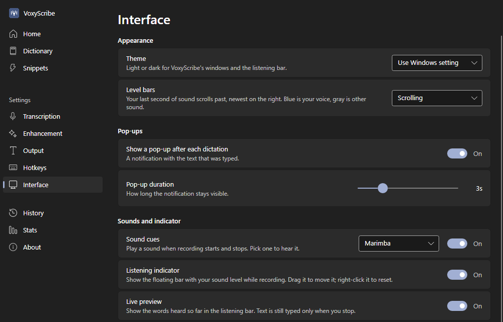
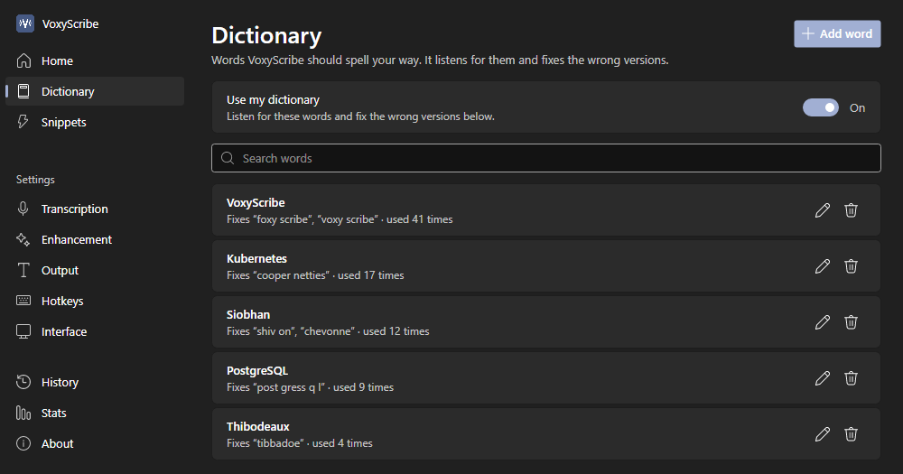

On your PC
Your voice never leaves your computer
VoxyScribe uses NVIDIA's Parakeet speech model, running on your own processor. There's no account and no cloud service, and after the first-time setup it works without the internet.
Voice typing for Windows
Hold a key, talk, and let go. Your words appear wherever your cursor is, in any app. VoxyScribe turns speech into text on your own PC, so what you say never leaves it.
An animation: someone holds Ctrl, Shift and Space, speaks, and their sentences appear in Notepad as they let go.
How it works
Click where you want the words: an email, a document, a chat. Then hold Ctrl Shift Space.
A small listening bar shows your voice and the words as they're heard. Punctuation and capitals come with them.
Your words appear at your cursor. Changed your mind? Press any other key while you hold the hotkey, and nothing is typed.
Talking for a while? Double-tap the hotkey to go hands-free, and tap it once when you're done. Turn on Type as I talk and each phrase appears as you pause.
Features
On your PC
VoxyScribe uses NVIDIA's Parakeet speech model, running on your own processor. There's no account and no cloud service, and after the first-time setup it works without the internet.
Fast
A five-second sentence is ready in under half a second on an 8-core desktop processor. No graphics card needed.
Measured on an Intel Core i7-10700K.
A dictionary that learns
Add names and terms, and VoxyScribe listens for them. If it gets one wrong, fix it where it was typed, select your fix, and press Ctrl Shift L. It gets it right from then on.
Voice commands
Say a command on its own and VoxyScribe carries it out.
Type as I talk
In hands-free mode, each phrase is typed at the pause after it, instead of all at the end.
Snippets
Say a few words and get the paragraph you type every day.
Quiet
Music and videos mute while the microphone is on and come back when you stop. You can turn this off.
Every app
Pasting works almost everywhere. For an app that blocks it, have VoxyScribe type the words instead, or just copy them. Choose app by app.
Nothing lost
Clicked away by mistake? Ctrl Shift V puts your last dictation in again. History keeps the rest, and you can clear it any time.
Audio files
Pick an interview, a lecture, or a voice memo from the tray menu and choose where the transcript goes. It comes out in paragraphs, each stamped with its time, tidied like your dictation and spelled with your dictionary.
MP3WAVM4AMP4AACWMAFLAC
[0:00] Dana: Thanks for making time. I wanted to walk through the launch plan before Friday.
[0:07] Marcus: Sure. The short version is we're on track, but the installer still needs one more test.
[0:15] Dana: Okay. What's left on that?
[0:18] Marcus: Mostly older laptops. I'll have the results Wednesday morning.
Make it yours
The listening bar floats over your work while you talk. Blue is your voice; gray is other sound. Pick a style, light or dark, and try it with your own voice.
Your last second of sound scrolls past, newest on the right.
Your microphone stays in this browser tab. Nothing is recorded or sent.
Settings
Change the hotkey, add words and snippets, pick a start sound and a style. VoxyScribe follows your Windows light or dark setting, or you can choose.


Privacy
VoxyScribe has no account, no analytics, and no ads. Speech recognition, speaker labels, and the optional AI cleanup all run on your computer. Recordings are never saved. Here is every time it uses the internet:
Get started
Questions
Yes, and free to share. Download it, use it, and give the installer to anyone, free of charge, under the license the installer shows. There's no account to create and nothing to sign up for.
Yes, once the speech model has downloaded at first start. Dictation and audio files work offline; speaker labels need a 26 MB download the first time you use them.
English. The speech model is built for English. Add unusual names and terms to the dictionary and it listens for them.
No. Speech recognition runs on your processor. A graphics card is used only for the optional AI cleanup, if you have one.
Anything with a place to type: Word, Outlook, Gmail and other websites, Slack, Teams, Notepad, and more. VoxyScribe pastes your words by default. If an app blocks pasting, set it to type them instead in the Output settings.
No. Your voice is held in memory only while it's turned into text. History keeps the text on your PC, and you can clear it. Voices you name for speaker labels are stored on your PC as voice fingerprints, and you can forget them.
Once a day VoxyScribe checks GitHub for a new version. When there is one, it asks you first, then installs it only if the download matches the SHA-256 fingerprint published with the release. VoxyScribe opens again when the update is done.
Like any other app: open Windows Settings, go to Apps, find VoxyScribe, and choose Uninstall.